Практичні курси · журнал «ДентАрт» 2019 №1
Рецесія ясен. Комплексний міждисциплінарний підхід
GUM RECESSION. COMPLEX INTERDISCIPLINARY APPROACH
Ольга ЧепурковаРецесія ясен, або гінгівальна рецесія, як закономірний наслідок стоншеного біотипу ясен у популяції стає однією з найпоширеніших морфологічно зумовлених змін в пародонті незалежно від віку і національності. За останніми даними, близько 60% людської популяції мають гінгівальну рецесію, поява і посилення якої є наслідком дії багатьох етіологічних факторів. Розуміння факторів розвитку рецесії ясен у кожному конкретному випадку дозволяє сформулювати комплексний міждисциплінарний підхід, який складається з таких основних етапів: початкової терапії, мукогінгівальної хірургії та підтримуючої терапії. Домогтися стійких результатів у лікуванні рецесії ясен можна лише за командного міждисциплінарного підходу: стоматолог-терапевт, гігієніст, пародонтолог, ортопед-гнатолог і ортодонт. Найкраще лікування рецесії ясен – це її рання профілактика.
Рецесія ясен, або гінгівальна рецесія, є незапальною апікальною міграцією ясенного краю від його фізіологічного розміщення нижче цементно-емалевої межі з поступовим оголенням поверхні кореня зуба з вестибулярного чи орального боку.1,2
Поширеність рецесії коливається від 9,7% у 15-річних до 99,3% у дорослого населення – за даними Леуса П. А. і Казеко Л. А.; і від 45,5% до 85,1% за даними Хамадеєвої А. М.3 За даними R. E. Cohen, більш ніж у 50% населення планети є одна або більше ділянок з рецесією ясен, і з віком поширеність та інтенсивність рецесії зростають.4
Згідно з дослідженням Департаменту щелепно-лицьової хірургії Польщі, понад 60% населення мають рецесії ясен незалежно від віку та етнічної приналежності.5 Такі дані корелюють зі світовими дослідженнями поширеності гінгівальної рецесії.6,7
Рецесія тканин пародонту (К06.0), або рецесія ясен, як закономірний наслідок стоншеного біотипу ясен стає одним з найпоширеніших морфологічно зумовлених змін у популяції. За останніми даними, близько 75% населення мають так званий тонкий біотип десни.8 Поява нового терміну «Biotypswitching» (перетворення тонкого біотипу пародонту на товстий), введеного у 2013 році, свідчить про актуальність проблеми в сучасній стоматології.9
У класифікації ВООЗ (Женева, 1997) виділяють рецесії: локалізовану; генералізовану; постінфекційну; післяопераційну; неуточненої етіології (ідіопатичну).
Класифікація МКБ-С за МКБ-10: К06.0 – Рецесія ясен
H. C. Sullivan і J. H. Atkins (1968) запропонували класифікувати рецесії так: глибока і широка, мілка і широка, глибока і вузька, мілка і вузька.10
P. D. Miller (1985) запропонував свою класифікацію рецесії ясен, де враховується стан міжзубних сосочків і рівень кісткової тканини у міжзубній зоні, а також відношення рецесії до рівня перехідної складки і кількості прикріплених кератинізованих ясен в зоні рецессії.11 Таким чином результат оперативного втручання для її закриття став прогнозованішим. Тому ця класифікація по праву визнана однією з найзручніших і найбільш широко застосовується нині.
Класифікація Miller P. D., 1985:
- Клас I. Рецесія, яка не виходить за межі мукогінгівальної лінії, без ураження кістки альвеолярних перегородок (вузька або широка). Прогноз: можливе повне усунення рецесії (фото 1).
- Клас II. Рецесія, що виходить за межі мукогінгівальної лінії, без ураження кістки альвеолярних перегородок (вузька або широка). Підклас IIА – збережена тонка смужка кератинізованих ясен. Підклас IIВ – відсутні кератинізовані ясна. Прогноз: можливе повне усунення рецесії (фото 2).
- Клас III. Рецесія, що виходить за рівень мукогінгівальної лінії, з ураженням кістки альвеолярних перегородок з одного боку (локальна або множинна). Прогноз: неможливе повне усунення без спрямованої регенерації тканин (СРТ) (фото 3).
- Клас IV. Циркулярна рецесія з ураженням альвеолярної кістки (обмежена або генералізована). Прогноз: неможливе повне усунення без СРТ (фото 4).
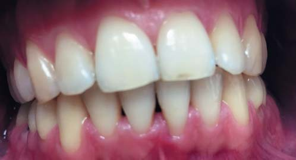
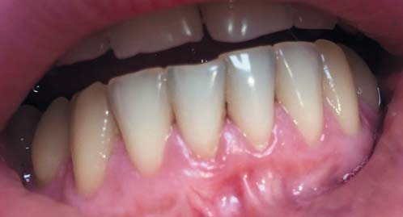
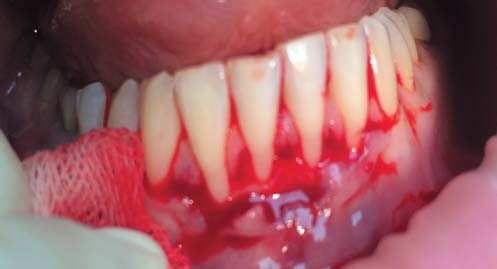
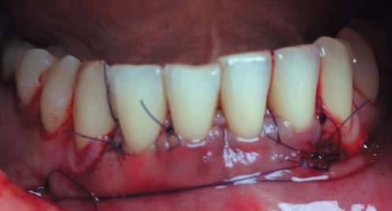
На підставі класифікації Міллера стає очевидним, що існують різні класи рецесії ясен, які мають різні клінічні прояви, з відповідною етіологією і особливим підходом у лікуванні.
«Класична» рецесія проявляється зміщенням ясенного краю вестибулярних або (рідше) оральних ясен в апікальному напрямку, спостерігається за відсутності запалення, не супроводжується втратою міжзубних сосочків, на панорамній реконструкції (ортопантомограмі) або прицільних внутрішньоротових знімках немає жодних змін, однак на КПКТ визначається відсутність кортикальної пластинки і зникнення опорних структур пародонту в аксіальних і сагітальних проекціях (фото 5, 6).
«Класична» рецесія – це в основному рецесія I і II класу за Міллером у молодих осіб до 30-35 років. Саме в таких клінічних випадках слід виявляти особливу уважність в аспекті своєчасної діагностики та планування лікування. Оскільки після 40 років більшою чи меншою мірою починаються явища пародонтиту в популяції, така клінічна форма рецесії ясен відповідає III і IV класам за класифікацією Міллера.
Рецесія на тлі запущеного пародонтиту (частіше при хронічних формах) розвивається повільно, іноді протягом багатьох років, уражає як крайові ясна, так і міжзубні сосочки (фото 7).
Зменшення маргінальних і міжзубних ясен часто відбувається після пародонтологічного лікування, особливо якщо застосовувалися методи хірургічної резекції (фото 8).12
Рецесія також може бути проявом вікової інволюції; у цьому разі страждають маргінальні і міжзубні ясна (фото 9).
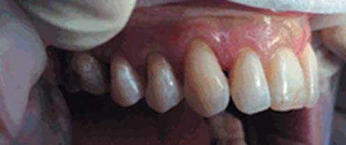
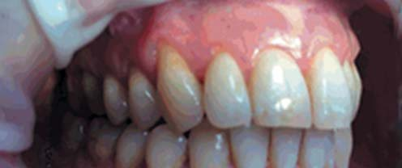
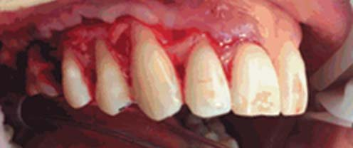
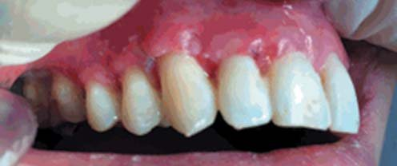
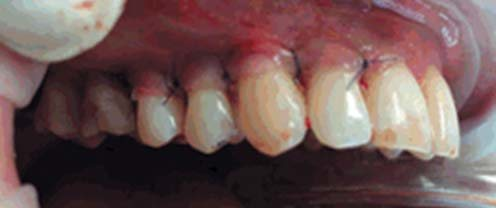
Складнощі діагностики та лікування такого захворювання безумовно пов’язані з мультифакторною етіологією захворювання.13
Існує кілька теорій розвитку рецесій. Генетична теорія базується на невідповідності розмірів кореня зуба і товщини альвеолярної кістки щелепи, що супроводжується стоншенням кортикальної пластинки і резорбцією кістки над коренем.14
Згідно з екзогенною теорією, тригерними механізмами розвитку рецесій є в основному екзогенні фактори: ортопедичні конструкції, ортодонтичні апарати (передусім вестибулярне переміщення зубів), натяг слизової оболонки і вуздечок, мілке переддвер’я ротової порожнини, тісне розміщення зубів, неправильне виконання гігієнічних заходів (агресивне чищення і використання жорсткої зубної щітки), вплив хронічної механічної травми (шкідливі звички, пірсинг).
Неправильне виконання гігієнічних і профілактичних заходів зубною щіткою і ниткою – одна з найпоширеніших причин травматичного характеру, особливо це стосується переважно горизонтальних рухів жорсткої зубної щітки.2 Саме тому правильний підбір зубної щітки, навчання техніці чищення зубів і контроль її виконання є однією з умов збереження стабільності рівня ясенного краю навіть після проведення хірургічного етапу лікування.
Вестибулярне переміщення зубів і підвищений тиск на тонку кортикальну пластинку вестибулярної частини лунки зуба ведуть до її резорбції і втрати всього пародонтального комплексу.15 На думку О. Цур і співавт. (2014), доцільно профілактично змінювати біотип від тонкого до товстого перед початком ортодонтичного лікування.16 Проте єдиного погляду на вплив ортодонтичного лікування на появу і прогресування рецесії в сучасній літературі немає.17 Рецесія може посилюватися при підвищеному бактеріальному і вірусному навантаженні в разі наявності твердих і м’яких зубних відкладень або в сукупності з тонким ясенним біотипом.18
Тонкий біотип ясен і особливості анатомо-морфологічної будови тканин пародонту (дегісценції – тріщина або щілина Стільмана; фенестрації). За тонкого біотипу ясен, на відміну від товстого, розвивається не локальна форма пародонтиту, а рецесія, оскільки втрата зубоясенного прикріплення і біологічної ширини призводить до крайового запалення і резорбції вестибулярної стінки альвеоли без утворення кісткових кишень. Недостатнє жувальне навантаження на зуб, переважання феномена прорізування зуба над стиранням ведуть до появи і прогресування ясенної рецесії. У той же час відсутність фізіологічного стирання твердих тканин зуба є однією з причин появи оклюзійних супраконтактів та оклюзійного перевантаження.19
У відповідності з класифікацією, запропонованою Dominiak M. і співавт., 2014,5 такі морфологічні чинники субкласифіковані в морфологічні умови (I) і безпосередні причини або ініціюючі причини (II-V), що провокують виникнення рецесії:
I. Первинні морфологічні умови
- Аа – (тип альвеолярної кістки клас D1-D4) за Мишем; співвідношення кортикальної і губчастої кістки, щільність кістки, розмір і форма альвеолярної кістки;
- Б – м’які тканини (товщина кератинізованих ясен), позиція і анатомія вуздечок губ, глибина переддвер’я ротової порожнини;
- С – показники зубів – форма і розміри зубів;
- D – показники м’язів – сила і розміри м’язових тяжів.
II. Функціональні фактори
А – ендогенні (первинні)
- орально-м’язова дискінезія, така як ковтальний рефлекс;
- оклюзійні і неоклюзійні парафункції;
- порушення постави.
Б – екзогенні (вторинні) травматичні
- чищення зубною щіткою (механічна травма);
- центричні і ексцентричні оклюзійні порушення (механічна травма);
- ятрогенні пошкодження під час лікування (механічні та хімічні);
- пірсинг (механічні);
- куріння (хімічні).
III. Чинники запалення
- А – низький рівень гігієни;
- Б – куріння (хімічні).
IV. Вік, стать (вторинні фактори)
V. Загальні захворювання (вторинні фактори).
Саме в молодому віці, в осіб 20-30 років, найчастіше і зустрічається сукупність таких чинників, як тонкий біотип ясен, агресивне чищення зубів та ортодонтичне лікування, що в підсумку веде до появи класичної рецесії ясен (I і II клас за Міллером). Основні зусилля слід спрямовувати на лікування пацієнтів з класичною формою рецесії ясен – для запобігання переходу рецесії I класу в рецесію II класу і ускладненню клінічної ситуації. Оскільки, навіть виходячи з базової класифікації Міллера, стає зрозуміло, що при прогресуванні рецесії прогноз її лікування погіршується.
Нами був розроблений і успішно застосовується протокол комплексного міждисциплінарного лікування рецесії ясен.
Лікування рецесії ясен
I. Початкова, або ініціальна терапія
1. Інструктаж і мотивування для виконання адекватної самостійної гігієни ротової порожнини. Контроль техніки чищення.
Інструменти і методики, рекомендовані для гігієни ротової порожнини за наявності тонкого біотипу пародонту:20
- щітка з короткою головкою – вертикально-обертальна методика;
- однопучкова щітка;
- електрична щітка з головкою (soft);
- методика Басса, метод Соло;
- звукова щітка.
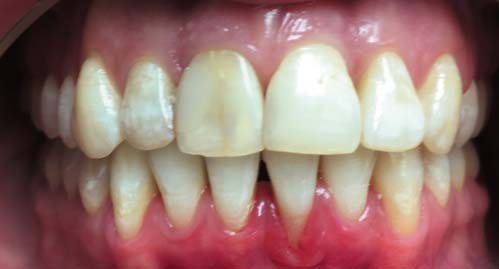
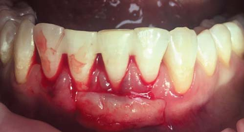
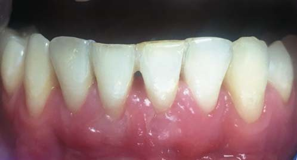
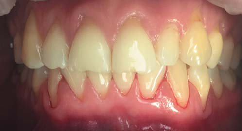
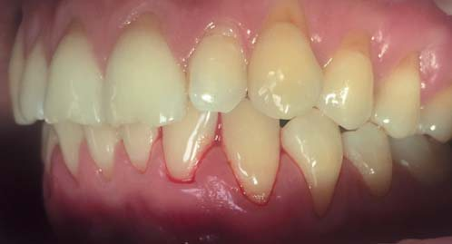
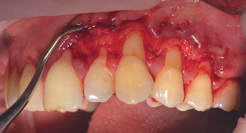
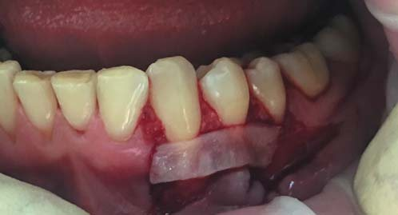
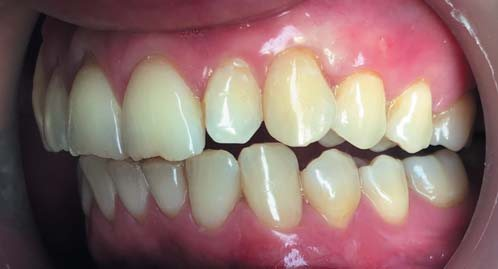
2. Відсутність нальоту і кровоточивості після зондування ясенної борозни (низький рівень кровоточивості – кровоточивість крайових ясен і наявність нальоту). Індекси для діагностики:
- індекс кровоточивості крайових ясен (GBI);
- індекс кровоточивості при зондуванні (Bleending on Probing Index, BoP).
3. Видалення над- і під’ясенних зубних відкладень у сучасній концепції (debridement – очищення ясенної борозни і контроль за бактеріальною інфекцією).
4. Санація ротової порожнини.
5. Біоревіталізація плазмою і/або гіалуроновою кислотою. У разі рецесії IV класу відновлення міжзубних сосочків за допомогою стабілізованої або зшитої гіалуронової кислоти.
6. Консультація стоматолога-ортодонта.
7. Консультація стоматолога-ортопеда-гнатолога і ортодонта.
II. Мукогінгівальна (пластична) хірургія
Нині існує багато класифікацій і методик мукогінгівальної хірургії. Вибір методу залежить від багатьох факторів і цілей, яких необхідно досягти в ході операції:
- припинення рецесії ясен;
- збільшення ширини прикріплених ясен;
- поглиблення переддвер’я ротової порожнини;
- закриття ділянок рецессії.12
III. Підтримуюча терапія
Раз на півроку — раз на рік. Без підтримуючої терапії у пацієнтів навіть після успішної мукогінгівальної хірургії дуже складно досягти довготермінового успіху. Підтримуюча терапія включає етапи ініціальної терапії.
Результати спостереження – на фото 10-17.
Висновки
Проблему рецесії ясен неможливо вирішити тільки хірургічним або тільки консервативним шляхом, рішення полягає в розумінні механізмів розвитку цієї морфологічної зміни ясенного краю. Поліетіологічність захворювання вимагає індивідуального, міждисциплінарного і комплексного підходу за участю таких фахівців, як стоматолог-терапевт, гігієніст, пародонтолог, ортопед-гнатолог і ортодонт. Це пов’язано з тим, що незважаючи на великі успіхи на цьому напрямку, зберігається високий рівень поширеності рецесії у населення, що робить проблему до кінця не вирішеною і вимагає подальшого всебічного вивчення. Тільки спільним комплексним і міждисциплінарним підходом ми зможемо добиватися стійкої ремісії у таких пацієнтів. Простий і недорогий спосіб закриття великих зон рецесії поки що видається недосяжним. Основним методом вибору на сьогодні залишається рання профілактика і раннє лікування рецесії ясен.
Література
- Коэн Э. С. Атлас косметической и реконструктивной хирургии пародонта / Э. С. Коэн. – М.: Практическая медицина, 2011. – 512 с.
- Зукелли Д. Пластическая хирургия мягких тканей полости рта / Д. Зукелли. – М.: Азбука, 2014. – 816 c.
- Леус П. А. Особенности клинических проявлений рецессии десны / П. А. Леус, Л. А. Казеко. – Минск, 1993. – 27 с.
- Cohen RE. J Am Dent Assoc. 2003 Feb;134(2):220-5. The etiology and prevalence of gingival recession.
- Dominiak M. New perspectives in the diagnostic of gingival recession / M. Dominiak, T. Gedrange // Adv. Clin. Exp. Med. – 2014. – Nov-Dec; 23(6). – P. 857-863.
- Mythri S1 at all // J Indian Soc Periodontol. 2015 Nov-Dec;19(6):671-5. Etiology and occurrence of gingival recession — An epidemiological study.
- Susin С at. аll. Gingival recession: epidemiology and risk indicators in a representative urban Brazilian population // J Periodontol. 2004 Oct;75(10):1377-86).
- Zawawi K. H. Prevalence of gingival biotype and its relationship to dental malocclusion / K. H. Zawawi, S. M. Al-Harthi, M. S. Al-Zahrani; Division of Orthodontics, Department of Preventive Dental Science, Faculty of Dentistry, King Abdulaziz University, Jeddah, Kingdom of Saudi Arabia // Saudi Med. J. – 2012. – Jun; 33(6). – P. 671-675.
- Esfahrood Z. R. Gingival biotype: a review / Z. R. Esfahrood, M. Kadkhodazadeh, Ardakani Talebi // Gen. Dent. – 2013. – Jul; 61(4). – P. 14-17.
- Sullivan H. C. Free autogenous gingival grafts. 1. Principles of successful grafting / H. C. Sullivan, J. H. Atkins // Periodontics. – 1968. – № 6(1). – P. 5-13.
- Miller P. D. A classification of marginal tissue recession / P. D. Miller // Int. J. Periodontics Restorative Dent. – 1985. – Vol. 5, №2. – P. 8-13.
- Вольф Г. Ф. Пародонтология: пер. с нем. / Г. Ф. Вольф, Э. М. Ратейцхак, К. Ратейцхак; под ред. проф. Г. М. Барера. – М.: МЕДпресс-информ, 2008. – 548 с.
- Kristopher K. Aetiology of a diagnosis: the key to success in treatment planning / K. Kristopher // Int. J. Orthod. Milwaukee. – 2014. – Sum; 25(2). – P. 13-15.
- Lange N. P. The relationship between the width of keratinized gingival and gingival health / N. P. Lange, H. Loe // J. Periodontol. – 1972. – Vol. 43. – P. 623.
- Foushee D. G. Effects of mandibular orthognathic treatment on mucogingival tissues / D. G. Foushee, J. D. Moriarty, D. M. Simpson // J. Periodontol. – 1985. – Dec; 56(12). – P. 727-733.
- Цур О. Пластическая и эстетическая хирургия в пародонтологии и имплантологии / О. Цур, М. Хюрцелер. – М.: Азбука, 2014. – 847 с.
- Zenter A. Proliferative response of cells of the dentogingival junction to mechanical stimulation / A. Zenter, T. G. Heaney, H. G. Sergl; Department of Orthodontics, University of Mainz, Germany // Eur. J. Orthod. – 2000. – Dec; 22(6). – P. 639-648.
- Wennstrom J. L. Mucogingival therapy-periodontal plastic surgery / J. L. Wennstrom, G. Pini Prato // Clinical periodontology and implant dentistry / eds. J. Lindhe, T. Karring, N. P. Lang. – 4 ed. – Oxford, England: Blackwell Munksgaard, 2003. – P. 576-649.
- Янушевич О. О. Хирургическое лечение локальной рецессии десны с применением препарата «Колапол»: автореф. дис. ... канд. мед. наук: 14.00.21 / Янушевич О. О. – М., 1996. – 21 с.
- Боттичелли Антонелла. Перенимая опыт. Руководство по профессиональной гигиене. / А. Ботичелли. – М.: Азбука, 2013. – 378 с.